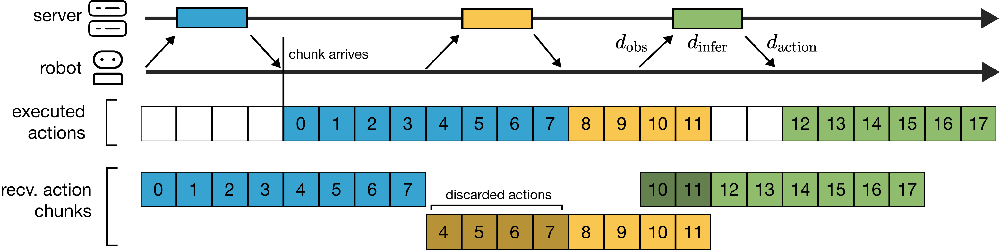
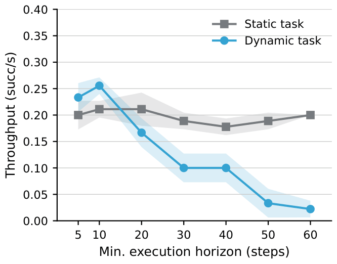
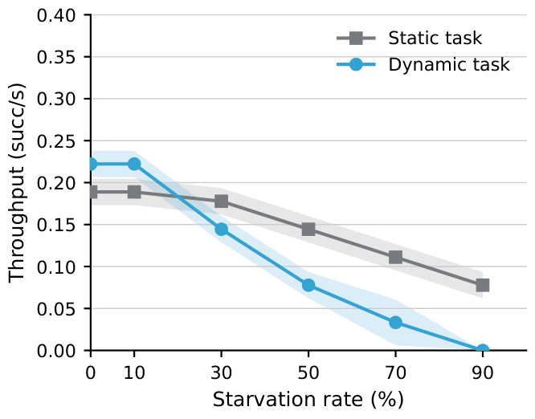
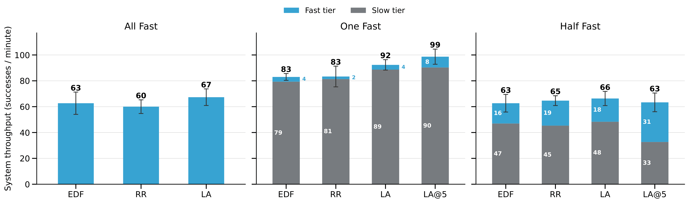
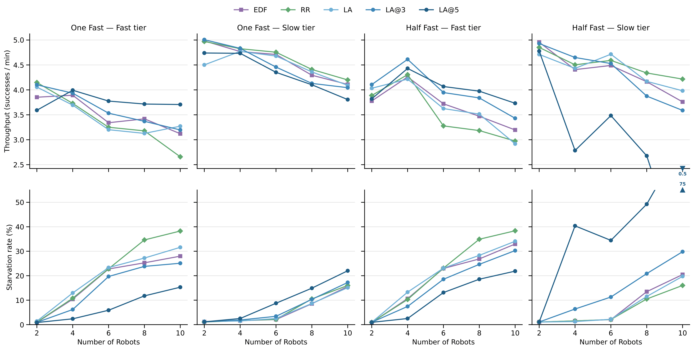

Armory is an end-to-end serving system for deploying robot policies from the cloud that tracks robot states and schedules action chunks to minimize robot starvation. Naive scheduling underserves fast robots completing highly dynamic tasks, so we propose Lookahead scheduling to be able to perform a trade off for fast robot service.
We deploy a fleet of 10 AgileX PiPER arms simultaneously served by a finetuned π0.5 checkpoint from a single cloud L40S GPU, with each robot streaming observations to the server and receiving action chunks back asynchronously. Robots that complete a dynamic turntable-sorting task require shorter execution horizons. We refer to them as fast robots. On the other hand,slow robots complete a static brick-into-bin sorting task that can tolerate longer execution horizons. Below, we show experiments with different schedulers serving the same One-Fast workload (1 fast robot, 9 slow robots) on our 10-robot fleet. Scrub the timeline to see the system progress across time. All videos are in real time (not sped up).
EDF starves the fast robot: it has no urgent deadline most of the time, so it is repeatedly deprioritized and stalls.
Round Robin treats every robot identically. The fast robot waits its turn and starves between visits, dragging system throughput down.
Lookahead serves the fast robot on time and keeps the slow robots productive: no robot stalls and overall system throughput rises.
Armory treats batched policy serving as a control-aware scheduling problem. Action chunk execution depends on when chunks are generated by the server and when they are received by the robot, so the scheduler reasons in robot time rather than request time. Armory maintains a server-side mirror of every robot's action queue, in-flight chunks, execution horizon, and communication delay, and uses it to predict the utility of each potential batch it could schedule.

Execution timeline. A robot with $H_{\text{max}}=8$ consumes actions by incrementing the action index, pausing whenever it is starved. If starvation occurs while a chunk is still in flight, the chunk's execution extends past $H_{\text{max}}$ steps after the observation was sent.
We model serving as an MDP over $N$ robots and scheduling epochs $k$. At each epoch the server observes state $s_k$ and picks a non-empty batch $B_k \subseteq \{1,\dots,N\}$ to serve. For each robot $j$, Armory tracks the latest executed action index $i_j$, the latest index $\hat{i}_j$ received from the robot, and a queue $\mathcal{Q}_j$ of generated chunks $c = (i_{\text{start}}, h_j, t_{\text{arr}})$. Inference on batch $B_k$ finishes at $t_{k+1} = t_k + \tilde{d}_{\text{infer}}(|B_k|)$, enqueueing one chunk per served robot; meanwhile every robot ticks at $f_c$, advancing $i_j$ iff some chunk has already arrived and still covers the current index.
$\Delta i_j$ is robot $j$'s non-starved control steps during the transition. Weights $w_j$ are an optional knob: $w_j=1$ treats every robot equally, while $w_j > 1$ prioritizes robots whose tasks demand fresher actions.
Exact planning in this MDP is intractable: future batch choices create a branching tree over robot execution states, and networking latencies are stochastic. We compare three tractable scheduling policies.
Cycles through robots in batches of maximum size $b$. Fair across robots but ignores urgency: a fast robot can starve while the scheduler waits its turn.
Schedules the $b$ robots predicted to run out of executable actions soonest. Captures imminent starvation, but treats every starvation event as equally costly and does not model how the chosen batch reshapes the next state.
At each epoch, Lookahead enumerates all candidate schedules of $L$ epochs, $\,S = (s_0,B_0),\dots,(s_{L-1},B_{L-1})$, rolls each one forward through the server-side mirror, and dispatches the first batch of the schedule with the highest score:
Normalizing by inference time trades GPU efficiency, starvation avoidance, and task-dependent reactivity against each other. We use a one-step instantiation ($L = 1$) in our experiments. Operators can dial $w_j$ on selected robots (denoted LA@$w_j$) to protect fast tier without rewriting the scheduler.
We track two primary metrics throughout the evaluations.
The fraction of control steps where a robot has no valid action to execute. A direct measure of stalled motion.
Successes per unit time: task completions per minute in simulation, and bricks sorted per 60-second window in the real world. Throughput captures what starvation actually costs downstream, and is task-dependent (see next section).
We evaluate Armory in both simulation (LIBERO-10) and on a fleet of 10 AgileX PiPER arms served by a finetuned $\pi_{0.5}$ checkpoint from a single L40S GPU. We vary heterogeneity across three settings: all-fast (homogeneous), one-fast (one dynamic + nine static), and half-fast (5 + 5).
We first verify the central premise: that the cost of latency is task-dependent. We sweep the minimum execution horizon and the induced starvation rate on a single robot running each task type.


Dynamic tasks are starvation-sensitive. A scheduler that treats every robot uniformly will underserve the robots whose tasks matter most.
We deploy each scheduler against the three heterogeneity scenarios and measure system throughput in legos-per-minute, separated by fast and slow tier.

Real-world throughput. In one-fast, LA@5 nearly doubles fast-tier throughput over EDF and slightly boosts the slow tier as well, raising overall system throughput by $\sim$18%. In half-fast, the same weighting shifts throughput sharply toward the fast tier, an operator-tunable knob, not an improvement-everywhere claim. The homogeneous all-fast setting shows all schedulers performing comparably.
Sweeping fleet size from 2 to 10 in simulation reproduces the real-world story: weighting exposes a controllable throughput / starvation tradeoff between the fast and slow tiers.

LIBERO-10 per-tier breakdown. In one-fast, LA@5 holds fast-tier throughput high and starvation low without sacrificing the slow tier. In half-fast, LA@3 is the sweet spot: it improves fast-tier service while keeping slow-tier performance close to fixed-priority baselines; LA@5 marks the boundary where prioritizing fast robots begins to noticeably cost the slow tier.
Dynamic manipulation degrades sharply with stale chunks and starvation, while quasi-static manipulation is much more tolerant. Treating every robot uniformly wastes service on robots that don't need it and starves the ones that do.
When every robot has the same reactivity requirements, Round Robin and Earliest-Deadline-First perform comparably to Lookahead. Smart scheduling only pays off when reactivity differs across robots.
By simulating each candidate batch's effect on action-buffer dynamics, Lookahead selectively protects latency-sensitive robots and improves real-world system throughput by up to 18% over EDF, with a single weight knob that lets operators trade fast-tier service against slow-tier service.